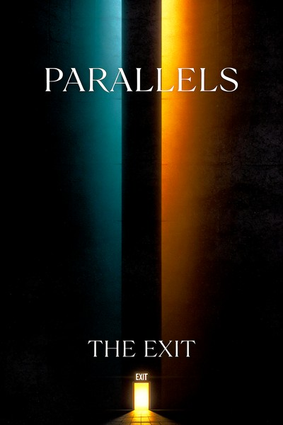

In December 2025, a month after getting laid off, I sat down with 1MinAI and wrote an EP in four days.
Not “wrote” in the way people usually mean when they talk about AI music—not “typed a genre and hit generate.” I wrote lyrics. All of them. Every verse, hook, bridge, and ad-lib. Then I built a prompt engineering system to translate those lyrics into a specific sonic identity, and iterated across 20+ generations to find the takes that landed. The production pipeline ran through 1MinAI, which gave me access to multiple AI music models. All final tracks were generated with Suno v5.
The result is Parallels, a 7-track EP by The Exit. Every track is a duet—deep male vocals against high female vocal reach—creating a running conversation between vulnerability and resolve. It’s about boundaries, reciprocity, and learning to stop editing yourself down to fit other people’s comfort.
Listening to Parallels (Redux) — remastered with refined EQ, bass restoration, and loudness normalization. Original version · Bonus: Merry Mo’F’in Christmas
The Process
I started the way I start most things: with the writing.
Each track began as a personal essay compressed into verse structure. “Say Less” opens the EP with a quiet withdrawal—the verse walks through recognition (“I peep the little jokes with the little sting”), and the bridge offers grace without reopening the door: “I hope you heal, I really do, cause bitter looks heavy on you.” “Outcast Society” was the most personal and the most iterated—five generations across two AI engines before it landed. It traces an arc from self-editing (“Edited my joy so it looked chill”) to arriving in a city where boys hold hands on the street “like it’s not a point,” though the body still braces on cue. The real antagonist isn’t them—it’s the judge you installed inside your own head.
“Even” (working title: “Match My Energy”) is the most energetic track, the one that dances—it just won’t dance alone. The bridge shifts to direct call-and-response: “Two steps in? Then I’m two steps in. One foot out? Then I don’t begin.” “Limited Access” is the most direct—no metaphor, no hedging. The bridge lands a line I’m genuinely proud of: “Love is not a discount code—it’s full price or not at all.”
“NPCs” opens with a spoken close-mic line: “It’s wild how confident a script can sound.” It’s the most talk-sung track, almost spoken word. Verse 2 has the sharpest writing on the record: “They call it ‘community’ when it’s just fear with better lighting and matching receipts.” And “All of Me” is the emotional center—the slowest, most vocal-forward track, deliberately generated with more space around the lyrics. Its closing image is the thesis of the entire EP: “I’d rather dance with my whole reflection than be loved in small sections.”
The lyrics came first and came fast. What took longer was the production layer.
Prompt Engineering for Music
These tools don’t give you a mixing board. They give you a text box. That means your “production” is prompt engineering—and the same principles I use in stonerOS apply directly.
I built a style prompt system with a base template and per-track modifiers:
Base template (consistent across all tracks):
Alt-R&B/hip-hop and Dance, duet, deep male vocals, high female vocal reach
Per-track modifiers (what made each track distinct):
- Say Less: Standard base—the sonic anchor for the EP
- Outcast Society: “with more range” + “high female vocals in backup”—the widest vocal palette
- Even: “high reaching notes”—pushed the female vocal higher for energy
- NPCs: “Upbeat genre bending”—broke the R&B mold, more hip-hop/dance forward
- All of Me: “Very vocal forward slower”—pulled everything back to let the lyrics breathe
- Limited Access: Minimal tags (“R&B, dance”)—trusted the lyrics to carry the weight
- Say Less (Remix): “Remix of Upbeat genre bending”—same lyrics, darker production
This is the same pattern I use for AI agents: define a consistent base behavior, then apply contextual modifiers per task. The skill transfers directly.
Each track went through 2–5 generations before I had a version worth keeping. “Outcast Society” took the most work—five rounds, including test generations on Google’s Lyria model to compare how different engines interpreted the same lyrics. “Limited Access” evolved its tags across generations, starting minimal and adding specificity. I’d listen, adjust the prompt, regenerate, compare. The selection process—knowing which take captures the right energy—is a human judgment call that no amount of prompt engineering automates.
The Tracklist
- Say Less — The EP opener. Quiet withdrawal, grace without access. “I can love from a distance and still keep it solid.”
- Outcast Society — The most personal track. Self-editing as survival, then choosing to stop. “Now the only rule I follow is: don’t shrink down just to be part.”
- Even — The one that dances. Reciprocity demanded, not requested. “Keep it even, or keep it movin’.”
- Limited Access — The most direct. Self-worth stated plainly. “Love is not a discount code—it’s full price or not at all.”
- NPCs — The sharpest. Performed authenticity, observed and released. “Grace on my tongue, ice in my spine.”
- All of Me — The emotional center. The thesis track. “I’d rather dance with my whole reflection than be loved in small sections.”
- Say Less (Remix) — Same lyrics, darker edge. The withdrawal with less patience.
Bonus: Merry Mo’F’in Christmas — A holiday track with whistle tones, a saxophone solo, and a trap beat. Gender-flipped from the rest of the EP: female lead, male backup. Four versions generated, each pushing the production glossier. “Have a Merry Motherfuckin’ Christmas—and kiss the good girl goodbye!”
Standalone single: Feature Freeze — The only track on Suno v4 (everything else is v5), and the most heavily tagged generation in the catalog—specific references to James Blake and Frank Ocean as sonic guideposts. Trip-hop, vinyl crackle, D minor. Not part of Parallels, but the line that closes it could close the whole project: “I am enough before I do anything. The wolf doesn’t howl to prove it’s there—it howls because it’s alive.”
What I Actually Think About AI Music
The vocals aren’t mine. The instrumentation is generated. I’m not pretending this is a traditional artistic process.
But the lyrics are entirely mine—every word, every structure choice, every thematic arc. The prompt engineering that shaped the sound is a real skill applied deliberately. The curation process of selecting which generations to keep required the same ear any producer uses. And the creative vision—what the EP is about, what it’s for, what emotional territory it covers—that’s not something a text box produces.
AI music tools are instruments. Crude ones, currently. But instruments. The question isn’t whether AI was involved. It’s whether the person using it had something to say.
I had something to say.
December 2025. Written during the same stretch that produced stonerOS—a period where having too much free time and too many feelings turned out to be productive.